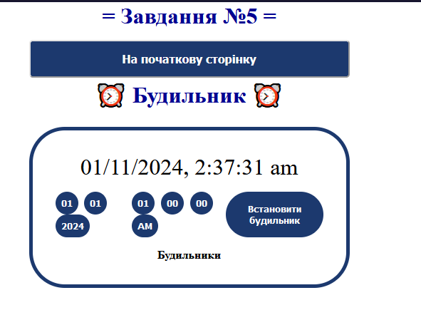
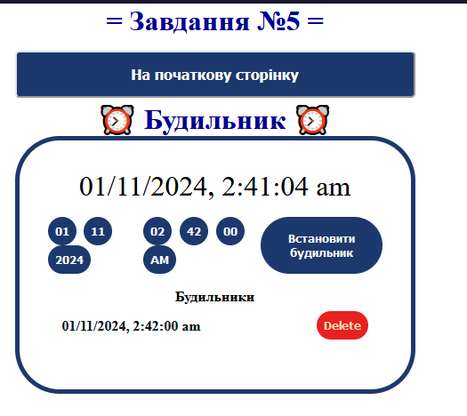
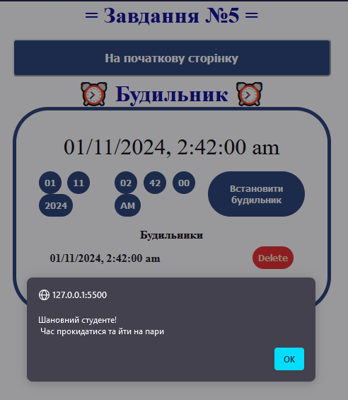

Завдання №5
HTML-код (task5.html)
<!DOCTYPE html> <html lang="en"> <head> <meta charset="UTF-8"> <meta name="viewport" content="width=device-width, initial-scale=1.0"> <title>= Task 5 =</title> <link rel="stylesheet" href="style1.css"> <link rel="stylesheet" href="styletask5.css"> </head> <body> <header></header> <main> <div class="button-container"> <h1>= Завдання №5 =</h1> <input type="button" class="button" onclick="window.location.href='./index.html'" value="На початкову сторінку"> </div> <div class= "title-alarm"> <h1> ⏰ Будильник ⏰ </h1> </div> <div class="main-alarm-container display-flex"> <div class="clock-container display-flex"> <!-- Відображення поточного часу --> <div class="current-time margin-bottom" id= "current-time">_ : _ : _ </div> <!-- Форма для встановлення будильника --> <form class="alarm-form display-flex margin-bottom"> <!-- Вибір дати (день, місяць, рік) --> <div> <select name="day" id="day" required></select> <select name="month" id="month" required></select> <select name="year" id="year" required></select> </div> <!-- Вибір часу (години, хвилини, секунди, AM/PM) --> <div> <select name="hours" id="hours" required></select> <select required name="minutes" id="minutes"></select> <select required name="seconds" id="seconds"></select> <select required name="am-pm" id="am-pm"> <option value="AM">AM</option> <option value="PM">PM</option> </select> </div> <!-- Кнопка для підтвердження установки будильника --> <button class="btn submit-button" id="submitButton" type="submit">Встановити будильник</button> </form> <div class="set-alarm-container"> <div class="set-alarm-container-title mb">Будильники</div> <!-- Контейнер для відображення встановлених будильників --> <div class="alarms-container" id= "alarms-container"></div> </div> </div> </div> </main> <footer></footer> <script src="./task5.js"></script> </body> </html>
CSS-код (styletask5.css)
/* ВИЗНАЧЕННЯ ОСНОВНИХ СТИЛІВ ДЛЯ УСІХ ЕЛЕМЕНТІВ */ * { margin: 0; padding: 0; box-sizing: border-box; } /* КЛАС ДЛЯ ВИКОРИСТАННЯ FLEX-БЛОКІВ */ .display-flex { display: flex; } /* СТИЛІ ДЛЯ КНОПОК */ .btn { outline: none; border: none; background-color: rgb(28, 57, 110); color: white; cursor: pointer; padding: 0.5rem; border-radius: 1px; transition: all 0.3s ease-in-out; } /* СТИЛІ ДЛЯ СПИСКІВ ВИБОРУ */ select { appearance: none; outline: black; background-color: rgb(28, 57, 110); color: white; padding: 0.5rem; font-weight: bold; border: none; border-radius: 2rem; margin-right: 0.3rem; cursor: pointer; border-color: black; } /* ВІДСТУПИ ВНИЗ */ .margin-bottom { margin-bottom: 1rem; } /* ОСНОВНИЙ КОНТЕЙНЕР ДЛЯ БУДИЛЬНИКА */ .main-alarm-container { min-height: 30vh; align-items: center; justify-content: center; } /* КОНТЕЙНЕР ДЛЯ ГОДИННИКУ */ .clock-container { padding: 2rem; flex-flow: column; justify-content: flex-start; align-items: center; width: 100%; min-height: 100vh; border: 5px solid rgb(28, 57, 110); background-color: #ffffff; } /* СТИЛІ ДЛЯ ВІДОБРАЖЕННЯ ПОТОЧНОГО ЧАСУ */ .current-time { font-size: 2rem; color: black; } /* ФОРМА ДЛЯ ВСТАНОВЛЕННЯ БУДИЛЬНИКА */ .alarm-form { justify-content: space-between; width: 100%; } /* КНОПКА ВСТАНОВЛЕННЯ БУДИЛЬНИКА */ .submit-button { border-color: black; border: 10px; border-radius: 2rem; font-weight: bold; } /* КОНТЕЙНЕР ДЛЯ ВСТАНОВЛЕНИХ БУДИЛЬНИКІВ */ .set-alarm-container { width: 100%; text-align: center; } /* ЗАГОЛОВОК СЕКЦІЇ З БУДИЛЬНИКАМИ */ .set-alarm-container .set-alarm-container-title { color: black; font-weight: bold; font-size: 1rem; } /* СТИЛІ ДЛЯ БУДИЛЬНИКІВ */ .alarm { justify-content: space-between; border-radius: 30px; padding: 0.5rem 1rem; align-items: center; } /* КНОПКА ДЛЯ ВИДАЛЕННЯ БУДИЛЬНИКА */ .alarm .delete-alarm { border-radius: 2rem; background-color: rgba(230, 13, 13, 0.918); font-weight: bold; color: wheat; font-size:xx-medium; } /* СТИЛІ ДЛЯ ВІДОБРАЖЕННЯ ЧАСУ */ .time { color: #0E141B; font-size: 1rem; font-weight: bold; } /* СТИЛІ ПРИ НАВЕДЕННІ НА КНОПКУ */ .btn:hover { color: lightgreen; } /* СТИЛІ ДЛЯ ЗАГОЛОВКА СТОРІНКИ */ .page-title{ margin-top: 100px; background-color: #ffffff; align-items: center; text-align: center; } /* МЕДІА-ЗАПИТИ ДЛЯ ВЕЛИКИХ ЕКРАНІВ */ @media only screen and (min-width: 600px) { .main-container { padding-block: 2rem; } .clock-container{ justify-content: center; border-radius: 50px; width: 450px; min-height: auto; } }
JS-код (task5.js)
// Вибір елементів з HTML-документу за їх ідентифікаторами const currentTime = document.querySelector("#current-time"); // Відображення поточного часу const hoursSet = document.querySelector("#hours"); // Вибір години const minutesSet = document.querySelector("#minutes"); // Вибір хвилини const secondsSet = document.querySelector("#seconds"); // Вибір секунди const ampmSet = document.querySelector("#am-pm"); // Вибір AM/PM const daySet = document.querySelector("#day"); // Вибір дня const monthSet = document.querySelector("#month"); // Вибір місяця const yearSet = document.querySelector("#year"); // Вибір року const setAlarmButton = document.querySelector("#submitButton"); // Кнопка для встановлення будильника const alarmContainer = document.querySelector("#alarms-container"); // Контейнер для будильників // Подія, що спрацьовує при завантаженні вікна window.addEventListener("DOMContentLoaded", (event) => { // Заповнення випадаючих списків значеннями dropDownMenu(1, 31, daySet); dropDownMenu(1, 12, monthSet); dropDownMenu(new Date().getFullYear(), new Date().getFullYear() + 5, yearSet); dropDownMenu(1, 12, hoursSet); dropDownMenu(0, 59, minutesSet); dropDownMenu(0, 59, secondsSet); // Оновлення поточного часу кожну секунду setInterval(getCurrentTime, 1000); fetchAlarm(); }); // Додавання обробника подій для кнопки встановлення будильника setAlarmButton.addEventListener("click", getInput); // Функція для заповнення випадаючого меню значеннями function dropDownMenu(start, end, element) { for (let i = start; i <= end; i++) { const dropDown = document.createElement("option"); dropDown.value = i < 10 ? "0" + i : i; dropDown.innerHTML = i < 10 ? "0" + i : i; element.appendChild(dropDown); } } // Функція для отримання поточного часу function getCurrentTime() { let time = new Date(); currentTime.innerHTML = time.toLocaleString("en-GB", { year: "numeric", month: "2-digit", day: "2-digit", hour: "numeric", minute: "numeric", second: "numeric", hour12: true, }); return time.toLocaleString("en-GB", { year: "numeric", month: "2-digit", day: "2-digit", hour: "numeric", minute: "numeric", second: "numeric", hour12: true, }); } // Функція для обробки введених даних будильника function getInput(e) { e.preventDefault(); // Отримання значень const dayValue = daySet.value; const monthValue = monthSet.value; const yearValue = yearSet.value; const hourValue = hoursSet.value; const minuteValue = minutesSet.value; const secondValue = secondsSet.value; const amPmValue = ampmSet.value; // Конвертація введених значень у формат дати та часу const alarmDateTime = convertToDateTime( dayValue, monthValue, yearValue, hourValue, minuteValue, secondValue, amPmValue ); // Встановлення будильника setAlarm(alarmDateTime); } // Функція для конвертації значень дати та часу у формат Date function convertToDateTime(day, month, year, hour, minute, second, amPm) { const date = new Date(`${year}-${month}-${day} ${hour}:${minute}:${second} ${amPm}`); // Повернення дати у форматі рядка return date.toLocaleString("en-GB", { year: "numeric", month: "2-digit", day: "2-digit", hour: "numeric", minute: "numeric", second: "numeric", hour12: true, }); } // Функція для встановлення будильника function setAlarm(time, fetching = false) { const alarm = setInterval(() => { // Перевірка, чи час будильника настав if (time === getCurrentTime()) { alert("Шановний студенте! \n Час прокидатися та йти на пари"); } }, 500); // Інтервал перевірки addAlaramToDom(time, alarm); // Додавання будильника до DOM if (!fetching) { saveAlarm(time); // Збереження будильника, якщо це не завантаження } } // Функція для додавання будильника до DOM function addAlaramToDom(time, intervalId) { const alarm = document.createElement("div"); // Створення контейнера для будильника alarm.classList.add("alarm", "margin-bottom", "display-flex"); // Додавання класів alarm.innerHTML = ` <div class="time">${time}</div> <button class="btn delete-alarm" data-id=${intervalId}>Delete</button> `; const deleteButton = alarm.querySelector(".delete-alarm"); // Отримання кнопки видалення deleteButton.addEventListener("click", (e) => deleteAlarm(e, time, intervalId)); // Обробник подій для кнопки видалення // Додавання будильника на початок контейнера alarmContainer.prepend(alarm); } // Функція для перевірки існуючих будильників у локальному сховищі function checkAlarams() { let alarms = []; const isPresent = localStorage.getItem("alarms"); // Перевірка наявності будильників у локальному сховищі if (isPresent) alarms = JSON.parse(isPresent); // Якщо є, парсимо їх return alarms; // Повертаємо масив будильників } // Функція для збереження нового будильника у локальному сховищі function saveAlarm(time) { const alarms = checkAlarams(); // Отримуємо існуючі будильники alarms.push(time); // Додаємо новий будильник localStorage.setItem("alarms", JSON.stringify(alarms)); // Зберігаємо оновлений масив } // Функція для завантаження будильників з локального сховища function fetchAlarm() { const alarms = checkAlarams(); // Отримуємо будильники alarms.forEach((time) => { setAlarm(time, true); // Встановлюємо кожен будильник }); } // Функція для видалення будильника function deleteAlarm(event, time, intervalId) { const self = event.target; // Зберігаємо контекст події clearInterval(intervalId); // Зупиняємо таймер будильника const alarm = self.parentElement; // Отримуємо батьківський елемент (контейнер будильника) console.log(time); deleteAlarmFromLocal(time); // Видаляємо будильник з локального сховища alarm.remove(); // Видаляємо будильник з DOM } // Функція для видалення будильника з локального сховища function deleteAlarmFromLocal(time) { const alarms = checkAlarams(); // Отримуємо існуючі будильники const index = alarms.indexOf(time); // Знаходимо індекс будильника alarms.splice(index, 1); // Видаляємо будильник з масиву localStorage.setItem("alarms", JSON.stringify(alarms)); // Оновлюємо локальне сховище }
Результат виконання
  Коментар до JS-коду
Цей код відповідає за управління будильником у веб-додатку. Він включає вибір елементів HTML за їхніми ідентифікаторами, що дозволяє користувачеві налаштувати час і дату для будильника. При завантаженні сторінки автоматично заповнюються випадаючі списки для днів, місяців, років, годин, хвилин та секунд, а також відображається поточний час, який оновлюється щосекунди. Кнопка для встановлення будильника активує процес, під час якого вводяться дані і конвертуються у формат дати. Визначена функція setAlarm, що перевіряє, чи настав час будильника, і, якщо так, виводить сповіщення. Крім того, код реалізує функції для збереження та видалення будильників з локального сховища, що забезпечує збереження даних навіть після перезавантаження сторінки.